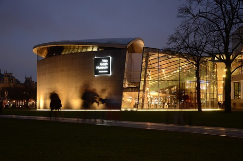
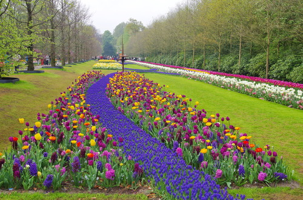

Amsterdam
Van Gogh Museum
The Van Gogh Museum is a Dutch art museum dedicated to the works of Vincent van Gogh and his contemporaries in the Museum Square in Amsterdam South.
Amsterdam Tulip Garden
Opening dates for Keukenhof Tulip Gardens are March 20–May 11, 2025. It's the most amazing day spent surrounded by tulips close to Amsterdam! Over 7 million flower bulbs are manually planted each year in the fall so they can bloom in the spring.
